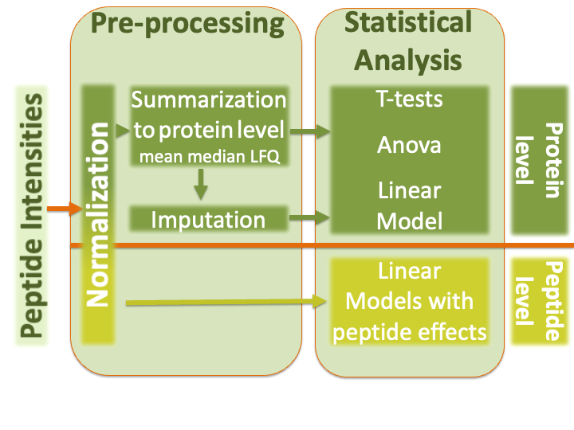

Statistical Methods for Quantitative MS-based Proteomics: Part I. Normalisation and Summarisation
Lieven Clement
June 11, 2021
1 Outline
Introduction
Preprocessing
- Filtering
- Log-transformation
- Normalisation
- Summarisation
2 Intro: Challenges in Label-Free Quantitative Proteomics
2.1 MS-based workflow

Peptide Characteristics
- Modifications
- Ionisation Efficiency: huge variability
- Identification
- Misidentification \(\rightarrow\) outliers
- MS\(^2\) selection on peptide abundance
- Context depending missingness
- Non-random missingness
\(\rightarrow\) Unbalanced pepide identifications across samples and messy data
2.2 Level of quantification
- MS-based proteomics returns peptides: pieces of proteins

- Quantification commonly required on the protein level

2.3 Label-free Quantitative Proteomics Data Analysis Workflows

2.4 CPTAC Spike-in Study

Same trypsin-digested yeast proteome background in each sample
Trypsin-digested Sigma UPS1 standard: 48 different human proteins spiked in at 5 different concentrations (treatment A-E)
Samples repeatedly run on different instruments in different labs
After MaxQuant search with match between runs option
- 41% of all proteins are quantified in all samples
- 6.6% of all peptides are quantified in all samples
\(\rightarrow\) vast amount of missingness
3 Preprocessing
3.1 Filtering
- Reverse sequences
- Only identified by modification site (only modified peptides detected)
- Razor peptides: non-unique peptides assigned to the protein group with the most other peptides
- Contaminants
- Peptides few identifications
- Proteins that are only identified with one or a few peptides
Filtering does not induce bias if the criterion is independent from the downstream data analysis!
LS0tCnRpdGxlOiAiU3RhdGlzdGljYWwgTWV0aG9kcyBmb3IgUXVhbnRpdGF0aXZlIE1TLWJhc2VkIFByb3Rlb21pY3M6IFBhcnQgSS4gTm9ybWFsaXNhdGlvbiBhbmQgU3VtbWFyaXNhdGlvbiIKYXV0aG9yOiAiTGlldmVuIENsZW1lbnQiCmRhdGU6ICdgciBmb3JtYXQoU3lzLkRhdGUoKSwgIiVCICVkLCAlWSIpYCcKb3V0cHV0OgogICAgaHRtbF9kb2N1bWVudDoKICAgICAgY29kZV9kb3dubG9hZDogdHJ1ZQogICAgICB0aGVtZTogY29zbW8KICAgICAgdG9jOiB0cnVlCiAgICAgIHRvY19mbG9hdDogdHJ1ZQogICAgICBoaWdobGlnaHQ6IHRhbmdvCiAgICAgIG51bWJlcl9zZWN0aW9uczogdHJ1ZQotLS0KCiMgT3V0bGluZQoKMS4gSW50cm9kdWN0aW9uCgoyLiBQcmVwcm9jZXNzaW5nCgogICAgLSBGaWx0ZXJpbmcKICAgIC0gTG9nLXRyYW5zZm9ybWF0aW9uCiAgICAtIE5vcm1hbGlzYXRpb24KICAgIC0gU3VtbWFyaXNhdGlvbgogICAgCiMgSW50cm86IENoYWxsZW5nZXMgaW4gTGFiZWwtRnJlZSBRdWFudGl0YXRpdmUgUHJvdGVvbWljcwoKIyMgTVMtYmFzZWQgd29ya2Zsb3cKYGBge3IgZWNobz1GQUxTRX0Ka25pdHI6OmluY2x1ZGVfZ3JhcGhpY3MoIi4vZmlndXJlcy9Qcm90ZW9taWNzV29ya2Zsb3cucG5nIikKYGBgCiAgCi0gUGVwdGlkZSBDaGFyYWN0ZXJpc3RpY3MKICAKICAtIE1vZGlmaWNhdGlvbnMKICAtIElvbmlzYXRpb24gRWZmaWNpZW5jeTogaHVnZSB2YXJpYWJpbGl0eQogIC0gSWRlbnRpZmljYXRpb24KICAgIC0gTWlzaWRlbnRpZmljYXRpb24gJFxyaWdodGFycm93JCBvdXRsaWVycwogICAgLSBNUyReMiQgc2VsZWN0aW9uIG9uIHBlcHRpZGUgYWJ1bmRhbmNlCiAgICAtIENvbnRleHQgZGVwZW5kaW5nIG1pc3NpbmduZXNzCiAgICAtIE5vbi1yYW5kb20gbWlzc2luZ25lc3MKCiRccmlnaHRhcnJvdyQgVW5iYWxhbmNlZCBwZXBpZGUgaWRlbnRpZmljYXRpb25zIGFjcm9zcyBzYW1wbGVzIGFuZCBtZXNzeSBkYXRhCgojIyBMZXZlbCBvZiBxdWFudGlmaWNhdGlvbgoKLSBNUy1iYXNlZCBwcm90ZW9taWNzIHJldHVybnMgcGVwdGlkZXM6IHBpZWNlcyBvZiBwcm90ZWlucwoKYGBge3IgZWNobz1GQUxTRX0Ka25pdHI6OmluY2x1ZGVfZ3JhcGhpY3MoIi4vZmlndXJlcy9jaGFsbGVuZ2VzX3BlcHRpZGVzLnBuZyIpCmBgYAoKLSBRdWFudGlmaWNhdGlvbiBjb21tb25seSByZXF1aXJlZCBvbiB0aGUgcHJvdGVpbiBsZXZlbAoKYGBge3IgZWNobz1GQUxTRX0Ka25pdHI6OmluY2x1ZGVfZ3JhcGhpY3MoIi4vZmlndXJlcy9jaGFsbGVuZ2VzX3Byb3RlaW5zLnBuZyIpCmBgYAoKIyMgTGFiZWwtZnJlZSBRdWFudGl0YXRpdmUgUHJvdGVvbWljcyBEYXRhIEFuYWx5c2lzIFdvcmtmbG93cwoKYGBge3IgZWNobz1GQUxTRX0Ka25pdHI6OmluY2x1ZGVfZ3JhcGhpY3MoIi4vZmlndXJlcy9wcm90ZW9taWNzRGF0YUFuYWx5c2lzLnBuZyIpCmBgYAoKIyMgQ1BUQUMgU3Bpa2UtaW4gU3R1ZHkKCgpgYGB7ciBlY2hvPUZBTFNFLCBvdXQud2lkdGg9IjYwJSJ9CmtuaXRyOjppbmNsdWRlX2dyYXBoaWNzKCIuL2ZpZ3VyZXMvY3B0YWNMYXlvdXRMdWRnZXIucG5nIikKYGBgCgotIFNhbWUgdHJ5cHNpbi1kaWdlc3RlZCB5ZWFzdCBwcm90ZW9tZSBiYWNrZ3JvdW5kIGluIGVhY2ggc2FtcGxlCi0gVHJ5cHNpbi1kaWdlc3RlZCBTaWdtYSBVUFMxIHN0YW5kYXJkOiA0OCBkaWZmZXJlbnQgaHVtYW4gcHJvdGVpbnMgc3Bpa2VkIGluIGF0IDUgZGlmZmVyZW50IGNvbmNlbnRyYXRpb25zICh0cmVhdG1lbnQgQS1FKSAKLSBTYW1wbGVzIHJlcGVhdGVkbHkgcnVuIG9uIGRpZmZlcmVudCBpbnN0cnVtZW50cyBpbiBkaWZmZXJlbnQgbGFicwotIEFmdGVyIE1heFF1YW50IHNlYXJjaCB3aXRoIG1hdGNoIGJldHdlZW4gcnVucyBvcHRpb24KCiAgLSA0MVwlIG9mIGFsbCBwcm90ZWlucyBhcmUgcXVhbnRpZmllZCBpbiBhbGwgc2FtcGxlcwogIC0gNi42XCUgb2YgYWxsIHBlcHRpZGVzIGFyZSBxdWFudGlmaWVkIGluIGFsbCBzYW1wbGVzCgokXHJpZ2h0YXJyb3ckIHZhc3QgYW1vdW50IG9mIG1pc3NpbmduZXNzCgoKIyBQcmVwcm9jZXNzaW5nCgojIyBGaWx0ZXJpbmcKCgotIFJldmVyc2Ugc2VxdWVuY2VzCi0gT25seSBpZGVudGlmaWVkIGJ5IG1vZGlmaWNhdGlvbiBzaXRlIChvbmx5IG1vZGlmaWVkIHBlcHRpZGVzIGRldGVjdGVkKQotIFJhem9yIHBlcHRpZGVzOiBub24tdW5pcXVlIHBlcHRpZGVzIGFzc2lnbmVkIHRvIHRoZSBwcm90ZWluIGdyb3VwIHdpdGggdGhlIG1vc3Qgb3RoZXIgcGVwdGlkZXMgCi0gQ29udGFtaW5hbnRzCi0gUGVwdGlkZXMgZmV3IGlkZW50aWZpY2F0aW9ucwotIFByb3RlaW5zIHRoYXQgYXJlIG9ubHkgaWRlbnRpZmllZCB3aXRoIG9uZSBvciBhIGZldyBwZXB0aWRlcwoKRmlsdGVyaW5nIGRvZXMgbm90IGluZHVjZSBiaWFzIGlmIHRoZSBjcml0ZXJpb24gaXMgaW5kZXBlbmRlbnQgZnJvbSB0aGUgZG93bnN0cmVhbSBkYXRhIGFuYWx5c2lzIQo=